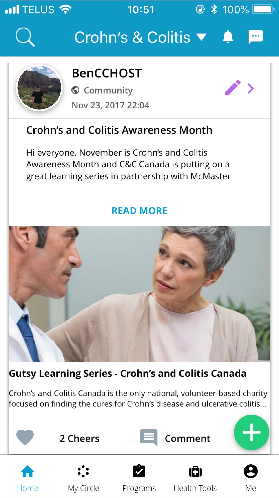
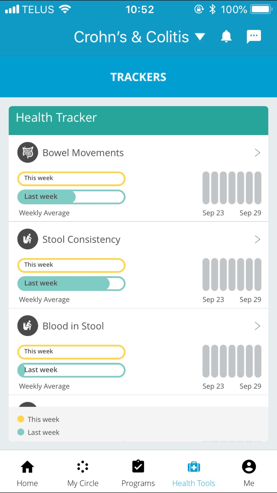
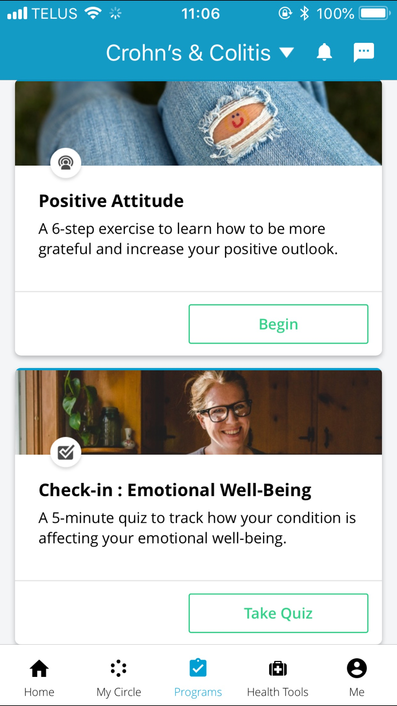

DEVELOPMENT SKILLS
HIGHLIGHTS

Grand Prize Winners at UBC Hacking Health

National Aboriginal Hockey Championships Gold Medal Winners

Canadian Federation of Medical Students National Lobby Day - Indigenous Mental Health
ABOUT ME
Third year medical student with a passion for medicine and technology who is currently learning web development skills. Strong desire to work in the health technology field and find solutions to health problems. Would like to continue discovering and exploring the fascinating world of technology.
PROJECTS
CROHN'S & COLITIS COMMUNITY / CURATIO
September 2016 - Current
Helped develop the medical content and health trackers from the C&C community on the app. Also developed programs which track emotional well-being for patients and can give reports on how well patients are benefitting from social support.
  ONLINE FOOD ORDERING WEBSITE / ANGIE & FRANK'S PIZZA
September 2018
An online ordering website where hungry clients of this fictitious restaurant can visit its website, select one or more dishes and place an order for pick-up. They will receive a notification when their order is ready, using the Twilio API.

TWITTER CLONE WEBSITE / TWONSTER
September 2018
Twonster is a simple, single-page Twitter clone that is aimed at a younger demographic. It can be used to teach and demonstrate how social media and technology works. Twonster allows a user to compose a tweet, post it and then have it show up directly into their feed.

WORK EXPERIENCE
MEDICAL STUDENT INTERN / CURATIO.ME

September 2016 -
As an independent project through school, I have worked with the company on medical content for their chronic disease communities, including supplying medical information and finding proper resources for patients. Currently, I am the community manager for the Crohn's & Colitis community.
ECOLOGIST / NATIONAL BISON RANGE

May 2014 - July 2014
Worked as researcher at the National Bison Range in Montana with Dr. Gary Belovksy. I worked on behavioural ecology project looking at how population levels changed with seasonal and climate changes. Learned ecological sampling procedures, research techniques and population density graphing.
CUSTOMER SERVICE REPRESENTATIVE / SCOTIABANK

January 2011 - May 2014
Worked on the front line with customers dealing with cash deposits and withdrawals, cheques, transfers, bills, money orders, credit card payments and other related banking transactions. Resolved problems and answer inquiries concerning customers’ accounts. Gained high customer service level and knowledge of financial information.
STUDENT RESEARCHER / UNIVERSITY OF NOTRE DAME

May 2013 - July 2013
Worked as student researcher in Wisconsin, USA with the University of Notre Dame Environmental Research Centre. I worked on behavioural ecology project looking at how invasive and native snail species react to sensing predators. Learned sampling techniques in aquatic and field habitats, experimental design and statistical programming.